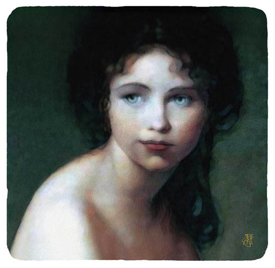
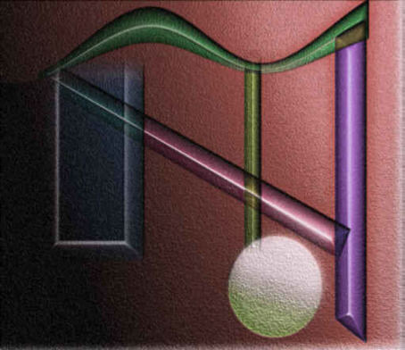
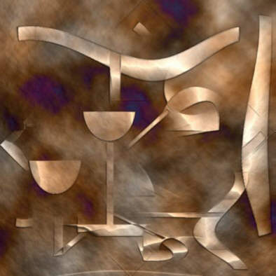
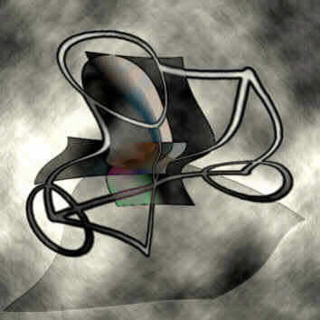
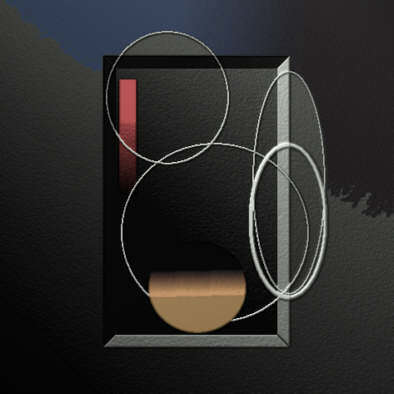
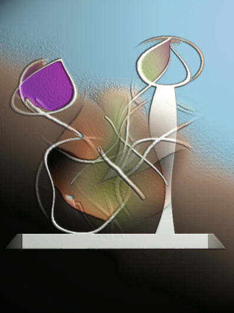

IMAGES OF THE DAY 52
11/21/2022 - 11/30/2022
Still Life for Dali
by Andrew Polushkin
11/21/2022
Click image to access artist's full exhibit

Portraits
Angela's Ribbon
by John Helgeson
11/22/2022
Click image to access artist's full exhibit

Portraits 
Ruby
by John Helgeson
11/23/2022
Click image to access artist's full exhibit
Abstract
My Art 2013-1-151
by Nedunseralathan
11/24/2022
Click image to access artist's full exhibit

Digitally Drawn
Night Music
by Siegfried Shreck
11/25/2022
Click image to access artist's full exhibit

Digitally Drawn 
Harp
by Siegfried Shreck
11/26/2022
Click image to access artist's full exhibit
Digitally Drawn 
Nero's Bathroom
by Siegfried Shreck
11/27/2022
Click image to access artist's full exhibit
Digitally Drawn 
Vehiculo
by Siegfried Shreck
11/28/2022
Click image to access artist's full exhibit
Digitally Drawn 
Jongleur
by Siegfried Shreck
11/29/2022
Click image to access artist's full exhibit
Digitally Drawn 
Flowers
by Siegfried Shreck
11/30/2022
Click image to access artist's full exhibit